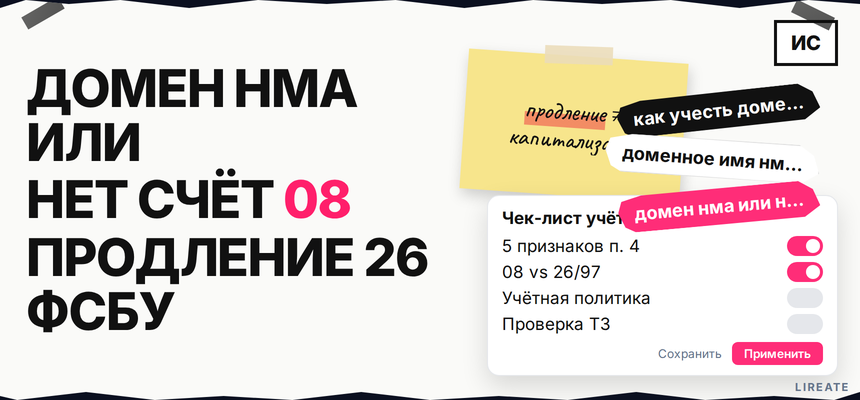
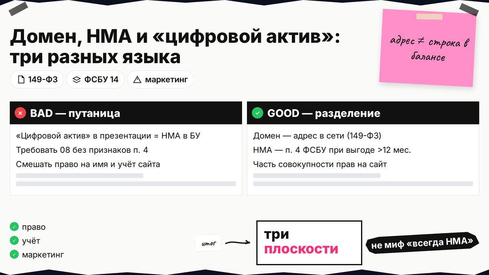
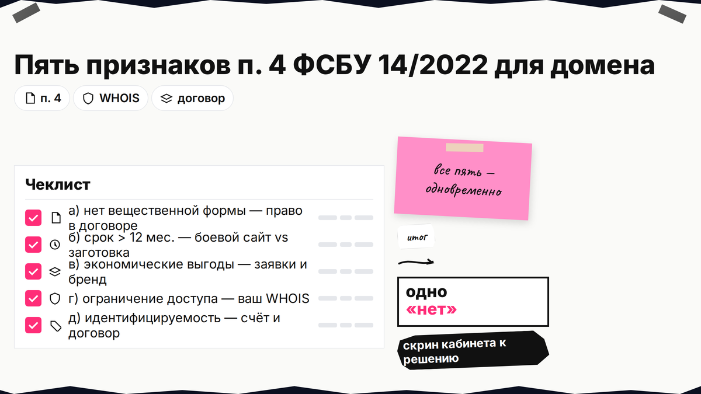
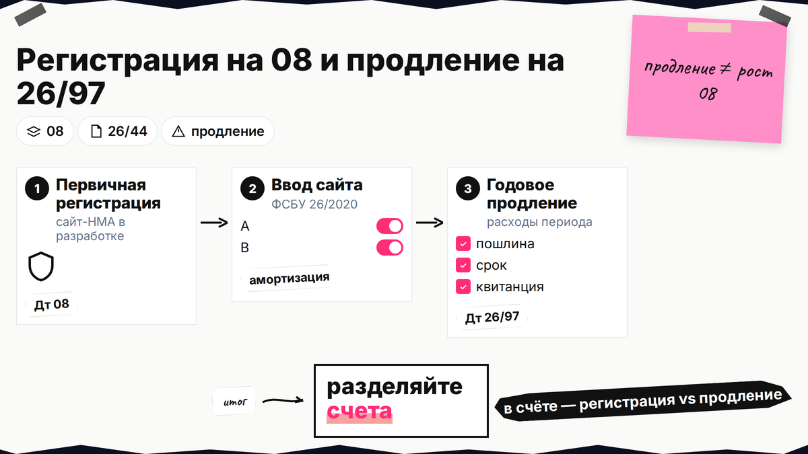

Счёт регистратора - на 08 как нематериальный актив или сразу в расходы? Через год приходит продление, и бухгалтерия снова спрашивает: капитализировать или списать в период. По ФСБУ 14/2022 отдельное доменное имя редко становится НМА, но первая регистрация при создании сайта часто входит в стоимость на счёте 08. Ниже вы пройдёте пять признаков п. 4, выберете объект учёта, зафиксируете проводки и свяжете имя с проверкой товарного знака до оплаты.

TL;DR / Быстрый инсайт: Домен - адрес в сети (п. 15 ст. 2 149-ФЗ), НМА - актив по п. 4 ФСБУ 14/2022 при использовании >12 мес. и выгоде. Первая регистрация при сайте-НМА → 08; продление после ввода сайта → 26/44 или 97, не рост 08. Проверьте ТЗ в Поисковой платформе (L01). Не аудит и не юруслуга (21.10.2026).
"Цифровой актив" в маркетинге и строка в балансе - не одно и то же. Письмо Минфина от 26.03.2002 не относило домен к НМА по старым правилам; с отчётности за 2024 обязателен ФСБУ 14/2022, и домен может входить в совокупность прав на сайт как часть инвентарного объекта. Ошибка владельца - требовать "всё на 08" без признаков актива; ошибка бухгалтера - списывать первичную регистрацию при капитализации сайта.

НМА - актив без вещественной формы под вашим контролем дольше года. Домен - запись для адресации; отдельным объектом ИС не является, хотя может нести товарный знак (п. 5 п. 2 ст. 1484 ГК). Делайте: разделять право, учёт и маркетинг. Не делайте: верить мифам "всегда/никогда НМА" - смотрите сайт и пример 10 ИПБР.

Все условия п. 4 ФСБУ 14/2022 должны выполняться одновременно. Сверьте договор регистратора с таблицей.
| Признак п. 4 ФСБУ | Вопрос по домену | Типичный ответ |
|---|---|---|
| а) нет вещественной формы | Это только право администрирования в договоре? | Да |
| б) срок использования > 12 мес. | Планируете держать имя в работе больше года? | Да для боевого сайта; нет для "заготовки" |
| в) экономические выгоды | Есть заявки, продажи, узнаваемость бренда через адрес? | Да для коммерческого сайта |
| г) ограничение доступа иных лиц | Только ваша организация администрирует запись? | Да при корректном WHOIS и продлении |
| д) идентифицируемость | Есть договор, счёт, отдельная статья в бюджете? | Да при нормальном документообороте |
Один "нет" для отдельного домена - обычно не НМА. Делайте: скрин кабинета к листу решения. Не делайте: капитализировать годовое продление при сроке права ≤12 мес. (klerk.ru).

| Сценарий | Типичное решение | Ориентир по проводкам |
|---|---|---|
| Создаёте новый сайт как НМА | Первичная регистрация домена в составе сайта | Дт 08 - Кт 60/76 (klerk.ru, ФСБУ 26/2020) |
| Сайт уже в эксплуатации | Продление домена - текущие расходы | Дт 26 - Кт 60; не увеличивать 08 |
| Домен "в запасе", сайт не запущен | Часто не НМА (нет выгод в деятельности) | 26/97 по политике |
| Покупка имени у третьего лица | Оценка: права vs услуга; сверка с НУ | Индивидуально, без "универсальной цены" |
Схема решения: собрать договор и счета → таблица признаков п. 4 → выбор "сайт-НМА / только расходы / забаланс" → запись в учётной политике → проводки при регистрации и при каждом продлении
Делайте: в политике назвать объект НМА (сайт, п. 11 ФСБУ 14/2022). Не делайте: относить рабочий домен на счёт 04 (это поиски, не делегирование).
До принятия сайта домен накапливают на 08 с разработкой (ФСБУ 26/2020). После ввода продление - расходы периода (klerk.ru), не рост 08.
| Операция | Бухгалтерский учёт (ориентир) | Чего избегать |
|---|---|---|
| Первая регистрация при создании сайта-НМА | Дт 08 - Кт 60/76 | Списать в 26, если сайт капитализируете |
| Продление на год при действующем сайте | Дт 26 (или 44) - Кт 60; альтернатива Дт 97 с равномерным списанием | Начислять амортизацию на платёж продления |
| Продление на срок ≤ 1 месяца | Сразу 26/44 | Откладывать на 97 без оснований |
Делайте: в счёте разделять регистрацию и продление. Не делайте: одну проводку на домен и хостинг без аналитики.
Бухгалтерский НМА и налоговый учёт расходятся: порог амортизируемого имущества по ст. 256 НК (с 2025 в обзорах - 100 000 руб.; для прошлых лет сверяйте редакцию на дату операции), продление услуг регистратора - по пп. 49 п. 1 ст. 264 НК равномерно по сроку договора или в периоде оплаты. Делайте: таблицу различий БУ/НУ на год. Не делайте: включать в амортизацию НУ каждую регистрацию .ru без суммы и без отдельного решения по сделке на вторичном рынке.
Спор по ТЗ не решается проводками: суды смотрят сходство обозначения и однородность товаров (практика СИП, в т.ч. С01-714/2025). До покупки или регистрации имени пройдите чек-лист L01 в Поисковой платформе; домен не заменяет знак в Роспатенте. По Положению КЦ .RU/.РФ правообладатель может запросить досудебные ограничения: регистратор рассматривает заявление два рабочих дня, блок действует 14 календарных дней, далее суд. Инструкция - на cctld.ru.
Делайте: зарегистрировать ТЗ на словесный элемент, вести календарь продлений и хранить доступ к кабинету регистратора. Не делайте: копировать чужой известный бренд в домене ради трафика - потеря имени обнулит и маркетинг, и спорный учёт на 08.
Делайте: лист решения с подписью главбуха. Не делайте: менять методику задним числом без исправлений по ФСБУ.
Соберите документы регистратора, пройдите таблицу п. 4, выберите объект учёта, проведите проводки 08/26/97, зафиксируйте правила в политике и проверьте ТЗ до оплаты. Если имя уже спорное, бухгалтерия не заменит переговоры: см. материалы по товарным знакам и порядок ответа на претензию. Лирейт помогает с защитой знака и репутации в сети и сопоставлением домена с реестром до сделки; при покупке на вторичном рынке привлеките аудитора до закрытия года.
Материал проверен: редакция Лирейт, практика учёта НМА и доменных имён для малого и среднего бизнеса.
Достоверность данных: ФСБУ 14/2022, ФСБУ 26/2020, п. 15 ст. 2 149-ФЗ, ст. 1484 ГК РФ, Положение КЦ .RU/.РФ и разъяснения klerk.ru, glavbukh.ru, nalogido.ru сверены с официальными текстами и открытыми публикациями на 21.10.2026. Показы Яндекс Вордстат в среде подготовки материала не запрашивались.
Отдельно - редко. Чаще - в 08 в составе сайта при первой регистрации или расход на продление. Сверьте все признаки п. 4 и политику.
Нет для эксплуатируемого имени: 04 - поиски. Рабочий домен - 08 с сайтом, 26/44/97 на продление или забаланс.
После ввода сайта в эксплуатацию типично Дт 26 - Кт 60 (или 44, если услуга не привязана к производству). Если учётная политика предусматривает равномерное признание и срок по договору больше месяца, используйте 97. На 08 продление не относите без отдельного обоснования в политике и без выполнения всех признаков п. 4.
Да, при создании сайта-НМА: на 08 до принятия сайта вместе с разработкой.
Разберите договор (право vs услуга), сверьте сумму с порогом ст. 256 НК и критериями капитализации в БУ.
Домен и ТЗ разные. Знак регистрируют в Роспатенте; домен - способ адресации (ст. 1484). Проверьте реестр до покупки имени.
Оцените однородность и сходство. Возможны досудебные ограничения .ru (14 дней), затем суд. Учёт спор не останавливает - меняйте имя или договаривайтесь.